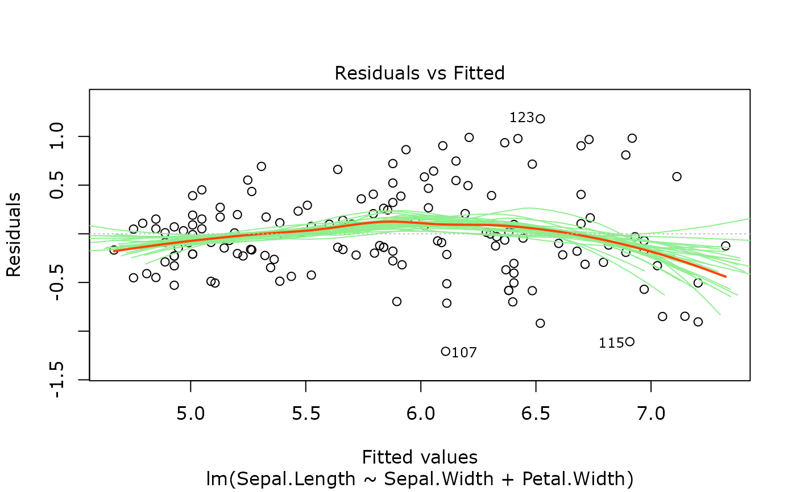
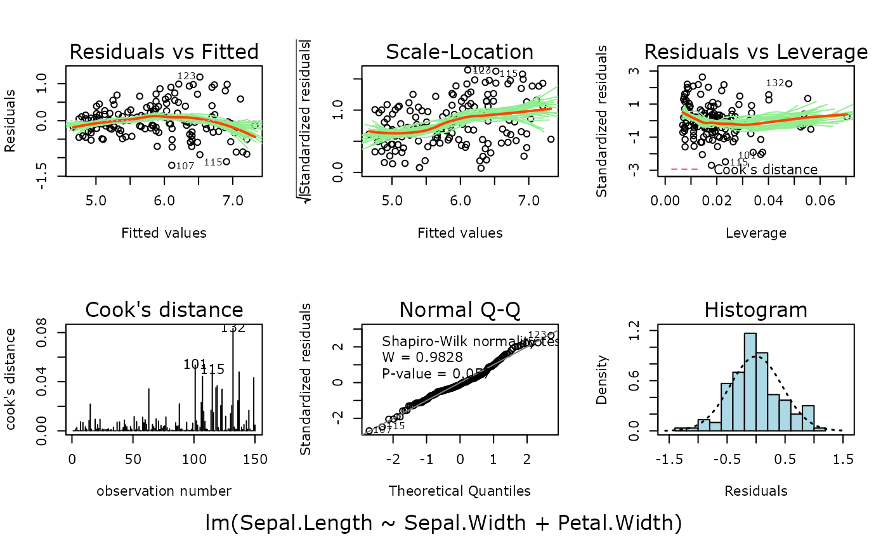
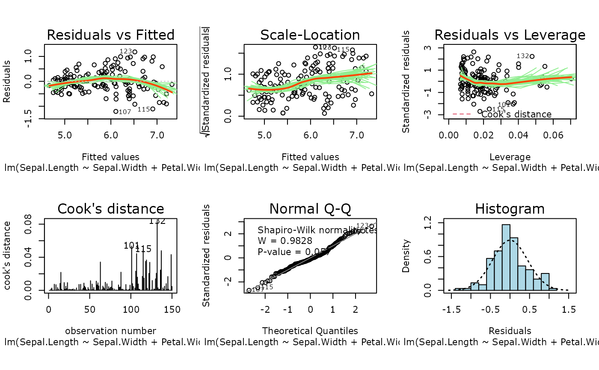
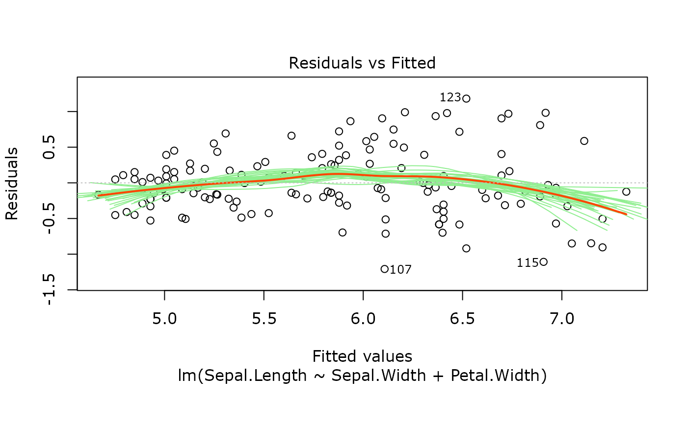
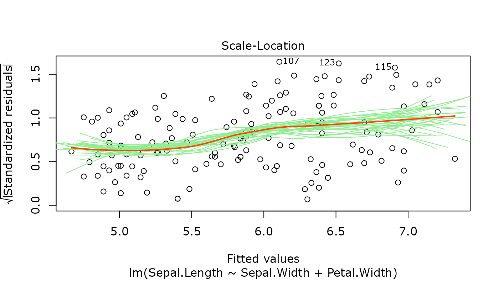
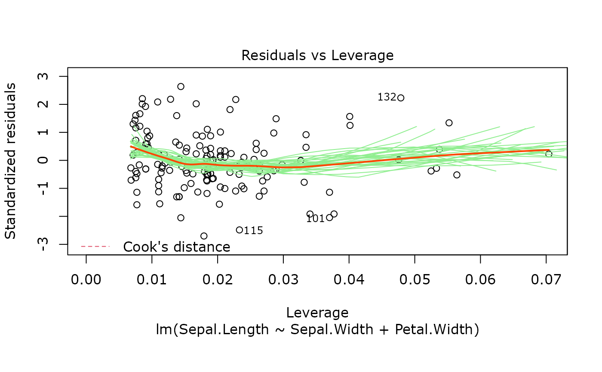
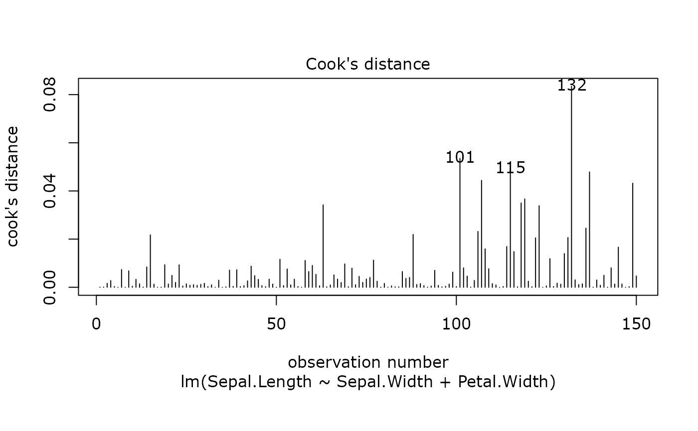
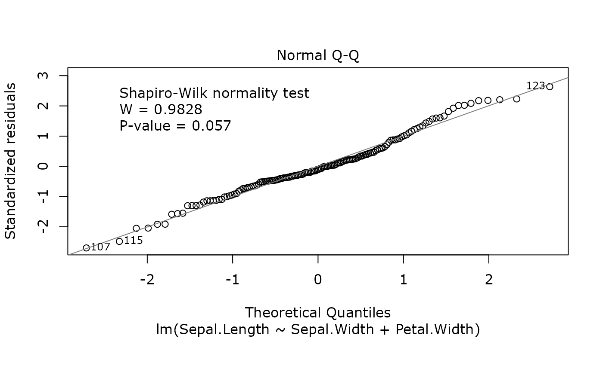
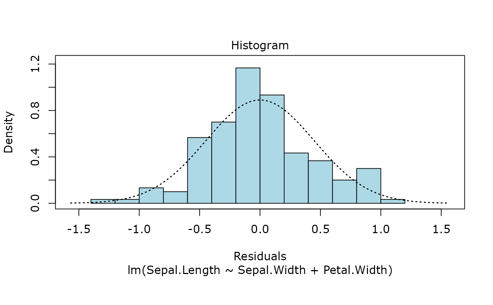

These plots are an extension of the original plots provided by
plot.lm.
Six plots are currently available: residuals versus fitted,
Scale-Location of \(\sqrt{| residuals|}\) against
fitted values, residuals against leverages, Cook's distance, Normal
Q-Q plot and histogram of residuals.
Also provided is the summary plot which shows all diagnostic plots
arranged in a 2 by 3 grid. By default, this is shown first, then each
of the individual plots in turn.
Usage
plotlm6(
x,
which = 1:6,
panel = if (add.smooth) panel.smooth else points,
sub.caption = NULL,
main = "",
ask = prod(par("mfcol")) < length(which) && dev.interactive(),
id.n = 3,
labels.id = names(residuals(x)),
cex.id = 0.75,
qqline = TRUE,
cook.levels = c(0.5, 1),
add.smooth = getOption("add.smooth", TRUE),
label.pos = c(4, 2),
cex.caption = 1,
showBootstraps = nrow(x$model) >= 30 && nrow(x$model) < 4000,
use.inzightplots = FALSE,
env = parent.frame(),
...
)Arguments
- x
an
lmobject, typically the result oflmorglm. Can also takesvyglmobjects.- which
numeric, if a subset of the plots is required, specify a subset of the numbers
1:6.7will produce a summary plot showing all of the plots arranged in a a grid.1:6will show the summary plot followed by each of the single plots one by one (default).- panel
panel function. the useful alternative to
points,panel.smoothcan be chosen byadd.smooth = TRUE.- sub.caption
common title. Above the figures if there are more than one; used as
sub(s.title) otherwise. IfNULL, as by default, a possible abbreviated version ofdeparse(x$call)is used.- main
title to each plot, in addition to
caption.- ask
logical, if
TRUE, the user is asked before each plot, seepar(ask=.). Ignored when only one plot is being shown.- id.n
number of points to be labelled in each plot, starting with the most extreme.
- labels.id
vector of labels, from which the labels for extreme plots will be chosen.
NULLuses observation numbers.- cex.id
magnification of point labels.
- qqline
logical, if
TRUE, aqqline()is added to the normal QQ plot.- cook.levels
levels of the Cook's distance at which to draw contours.
- add.smooth
logical, if
TRUE, a smoother is drawn to the appropriate plots; see alsopanelabove.- label.pos
positioning of labels, for the left half and right half of the graph respectively, for plots 1–3.
- cex.caption
controls the size of
caption.- showBootstraps
logical, if
TRUE, bootstrap loess smoothers are drawn in the first 4 plots. By default, only drawn for sample sizes of at least 30.- use.inzightplots
logical, if set to
TRUE, the iNZightPlots package will be used for plotting, rather than base R graphics.- env
environment for performing bootstrap simulations (i.e., to find the dataset!)
- ...
other arguments to be passed to through to plotting functions.
Details
For the residuals versus fitted values plot, we add bootstrapped
smoothers to illustrate variance. The smoother is also added to the
Scale-Location plot.
The Normal Q-Q and histogram plots are taken from the normcheck
function in the s20x package.
Examples
m <- lm(Sepal.Length ~ Sepal.Width + Petal.Width, data = iris)
plotlm6(m, which = 1)

# the summary grid:
plotlm6(m, which = 7)

# the default cycles through all 6 plots
plotlm6(m)






